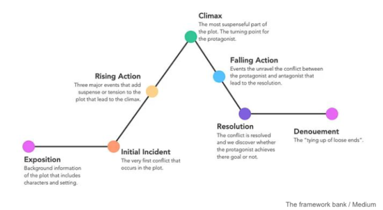

This week’s session provided a deep dive into the role of storytelling within digital and interactive media, guided by the experience and reflections of a creative producer and digital concept developer. The lecture combined personal career insights with practical advice on designing meaningful, user-centred interactive experiences.
The session began with an overview of the lecturer’s interdisciplinary journey from computer science and journalism to communications and eventually VR and transmedia production. This trajectory highlighted the importance of adaptability and curiosity in the creative tech landscape, emphasizing how storytelling can be used not just to entertain but to inspire empathy and social change.
A central theme of the lecture was the purpose behind interactive projects. We were encouraged to ask ourselves “why” before diving into “how.” Whether our goal is to educate, advocate, entertain, or evoke emotion, the success of a project hinges on having a clear intention and understanding the target audience. This foundational “why” guides every design decision and ensures relevance and emotional impact.

The discussion on linear versus interactive storytelling was particularly enlightening. Traditional narrative structures like the three-act play or the Hero’s Journey still offer valuable frameworks, but interactive media demands a different mindset. Instead of controlling the user’s experience, creators are tasked with crafting a world in which users feel agency and emotional investment. We explored how interactivity, whether through meaningful choices, character development, or spatial design can shape narrative immersion.
Another key insight was the distinction between sympathy and empathy. The lecturer explained that while sympathy connects audiences to a story, empathy enables deeper engagement, especially when users embody characters and experience their struggles firsthand. VR and simulation games were highlighted as powerful tools to foster this emotional connection, citing examples where participants made ethically challenging decisions that mirrored real-world dilemmas.
The class also addressed practical considerations like the balance between scope and polish, the importance of clear core mechanics, and how constraints can foster creativity. Games like This War of Mine and interactive experiences like the rave-based VR piece were examined for their effectiveness in combining gameplay with emotional depth.
Overall, this session was a powerful reminder that impactful storytelling is never just about telling, it’s about designing experiences that resonate. As creators, we are not just narrators but architects of meaning, crafting systems that invite reflection, empathy, and transformation.